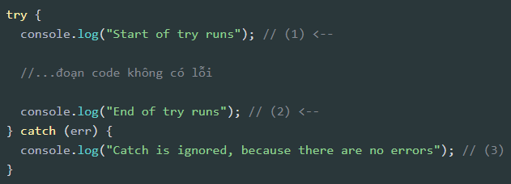
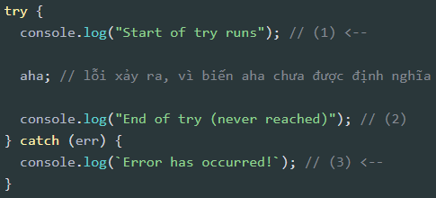

Cấu trúc điều khiển
Cấu trúc điều khiển là các câu lệnh được xây dựng sẵn dùng để thực thi các dòng code theo các yêu cầu được chỉ định.
Các cấu trúc lệnh điều khiển trong JavaScript
Câu lệnh if...else
Câu lệnh if
Đối với câu lệnh if...else không nhất thiết phải có
else khi có if.
Condition hay điều kiện ở đây là một đoạn code hay một mệnh đề mà
kết quả của nó trả về true/false. Ở đây, nếu
condition mà trả về true thì sẽ thực thi đoạn code
bên trong block code của if.
Câu lệnh else
Với else thì hơi khác if một chút là muốn có
else thì phải có if trước đó, tức là khi điều
kiện của mệnh đề if trước nó không đúng thì câu lệnh
else mới được thực thi, cấu trúc sẽ như sau.
Ví dụ:
Kết hợp if...else lồng nhau
Với ví dụ trên thì kết quả cuối cùng vẫn không được rõ ràng cho lắm, ta
vẫn chưa biết được khi nào a thực sự bằng
b hay khi nào a thực sự nhỏ hơn
b. Trong trường hợp này thì ta có thể lồng câu lệnh
if...else nhiều lần để có thể 'cover' hết được các trường
hợp có khả năng xảy ra.
Để cover được hết các trường hợp của ví dụ trên, ta làm như sau:
Câu lệnh switch...case
switch...case hay còn được gọi là câu lệnh rẽ nhánh, nó
thường được dùng để giải quyết các bài toán có các điều kiện cố định,
cấu trúc của nó như sau:
- condition: là biến mà ta muốn kiểm tra để rẽ nhánh.
- value1, value2,...: là các giá trị tại các nhánh điều kiện mà ta muốn kiểm tra. default: là trường hợp mặc định sẽ trả về nếu không thỏa các case bên trên.
-
default: là trường hợp mặc định sẽ trả về nếu không thỏa các
casebên trên. - break: có tác dụng dừng vòng lặp hay câu lệnh kiểm tra điều kiện trong chương trình.
Ví dụ:
Vòng lặp for
Vòng lặp đóng vai trò quan trọng trong hầu hết các ngôn ngữ lập trình, nó giúp giải quyết được các bài toán trong thực tế, đồng thời cũng giúp rút gọn code hơn.
Vòng lặp for cơ bản
Cú pháp cơ bản của vòng lặp for như sau:
Giải thích:
initialization (Khởi tạo): Được thực thi trước khi vòng lặp
for bắt đầu, biểu thức này dùng để khởi tạo bộ đếm của vòng
lặp. Khi kết thúc vòng lặp nó sẽ được giải phóng.
condition (Điều kiện): Ở đây ta có thể đặt điều kiện cho vòng
lặp, mỗi lần thực thi vòng lặp for thì nó sẽ check điều
kiện này, nếu điều kiện trả về true thì sẽ thực hiện block
code trong vòng lặp for và nếu trả về
false thì sẽ dừng vòng lặp for.
final-expression: Biểu thức này được thực thi sau mỗi lần lặp, dùng để tăng hoặc giảm bộ đếm của vòng lặp.
Ví dụ:
Một số lỗi thường mắc phải: Khi mới học về vòng lắp thì sẽ không
tránh khỏi việc gặp một vài lỗi nhỏ khi sử dụng vòng lặp
for, như ví dụ trên.
Trường hợp gặp lỗi ở ví dụ trên là do ta duyệt mảng theo giá trị
index của mảng, nhưng duyệt vượt qua giá trị
index trong mảng nên dẫn đến kết quả in ra cuối cùng bị
undefined.
Để fix lỗi trên ta chỉ cần đặt lại điều kiện cho vòng lặp
for thành i < arr.length hoặc
i <= arr.length - 1

Vòng lặp for...in
Vòng lặp for in là một câu lệnh điều khiển cơ bản cho phép
bạn lặp qua các thuộc tính của một đối tượng. Giống như vòng lặp
for truyền thống, for in cũng duyệt từng phần
từ một và thực thi khối lệnh trong thân vòng lặp.
Cú pháp của vòng lặp for in như sau:
- variable: Tên của một biến, một phần tử của mảng hoặc thuộc tính của một đối tượng.
- object: Một đối tượng hoặc tên của một đối tượng hợp lệ có các thuộc tính sẽ được lặp lại.
- statements: Các câu lệnh để thực hiện mỗi lần lặp.
Ví dụ:
Kết quả được in ra:
Sử dụng vòng lặp for in với một mảng
Ví dụ:
Kết quả được in ra:
Vòng lặp for...of
Vòng lặp for...of dùng để duyệt qua các value của
interable object (đối tượng có thể lặp lại) như Array, String,
Map, Set, Arguments object...
Ví dụ:
Vòng lặp while
Ngoài for thì ta còn có thể sử dụng vòng lặp
while nữa nè. Với while, nó sẽ kiểm tra điều
kiện trước rồi mới thực thi các dòng code bên trong nó nếu điều kiện trả
về true và tất nhiên sẽ dừng vòng lặp nếu điều kiện trả về
false hoặc gặp lệnh break.
Cú pháp của while:
Ví dụ:
Lưu ý: không giống như for việc tăng bộ đếm nằm trên
cùng một hàng và bắt buộc phải có thì mới chạy, while bạn
phải tăng hoặc giảm bộ đếm của vòng lặp tùy theo mục đích của bạn ở bên
trong nó và while vẫn sẽ chạy ngay cả khi ta không tăng bộ
đếm của vòng lặp, tuy nhiên nó sẽ lặp vô hạn.
Vòng lặp do...while
Một câu lệnh khác dùng để thực hiện các vòng lặp đó là
do...while. Khác với for và
while, do...while thực thi code bên trong khối
lệnh trước rồi mới check điều kiện ở cuối mỗi lần lặp.
Cú pháp cuar do...while:
Ví dụ:
Lưu ý: Tương tự như while, ta cũng phải tăng hoặc
giảm bộ đếm theo mục đích của mình để vòng lặp được thực thi. Nếu ta
không tăng hoặc quên thì nó sẽ lặp vô hạn.
Xử lý lỗi với try catch
Thông thường, khi chương trình bị crash (dừng lại) do lỗi thì lỗi sẽ được in ra console ngay lập tức.
Tuy nhiên, JavaScript có một cấu trúc cú pháp là
try...catch cho phép bạn bắt lỗi để làm điều gì đó
hợp lý hơn thay vì để chương trình crash
như:
- Hiển thị thông báo lỗi.
- Thay đổi giao diện để hiển thị lỗi.
- ...vv
Cú pháp "try...catch":
Cú pháp try...catch có hai khối chính là try,
và sau đó là catch:
Cách hoạt động của try...catch như sau:
1. Đầu tiên, đoạn mã trong try {...} được thực thi.
2. Nếu không có lỗi thì catch (err) bị bỏ qua, việc thực
thi đến cuối try và tiếp tục, bỏ qua catch.
3. Nếu có lỗi xảy ra thì quá trình thực thi try bị dừng và
chương trình chuyển đến đầu catch (err). Trong đó, biến
err (ta có thể sử dụng bất kỳ tên nào tùy thích) sẽ chứa
một đối tượng lỗi với thông tin chi tiết về lỗi đã xảy ra.
Vì vậy, lỗi xảy ra bên trong try {...} sẽ không làm chương
trình bị crash - và sau đó ta có thể làm gì đó trong catch.
Ví dụ:
-
Ví dụ không có lỗi thì đoạn code
console.logtại(1)và(2)được thực thi: -
Ví dụ có lỗi thì hiển thị
(1)và(3):
Chú ý: Cú pháp try...catch chỉ hoạt động ở
runtime. Nói cách khác, đoạn code chứa trong
try phải đúng cú pháp.
Ví dụ đoạn code sai cú pháp sau: